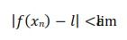
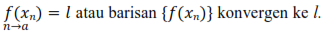
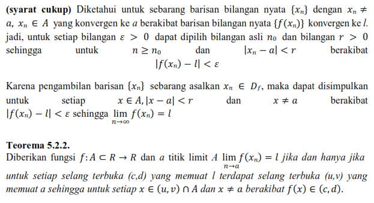
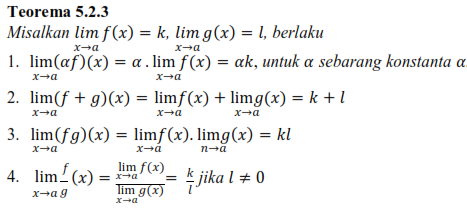
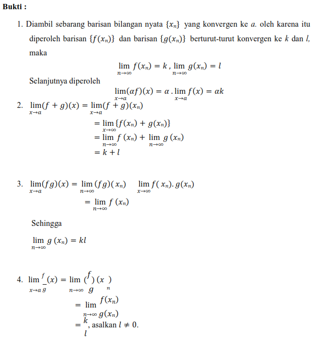

Ada beberapa konsep untuk menguji limit suatu fungsi, diantaranya dua teorema di bawah ini.
Teorema 5.2.1
Misalkan fungsi f: A ⊂ R → R dengan a sebagai titik limit A limx → a f(x) = l jika dan hanya jika untuk setiap barisan bilangan nyata {f(xn)} konvergen ke l.
Bukti: (syarat perlu) limx → a f(x) = l jika dan hanya jika untuk setiap bilangan ε > 0 terdapat bilangan r > 0 sehingga jika x ≠ a, x ∈ A, |x − a| < r berakibat |f (x) − l| < ε.
Diambil sebarang barisan bilangan r > 0 tersebut dapat dipilih {xn} dengan xn ∈ A yang konvergen ke a. Hal ini berarti untuk bilangan r > 0 tersebut dapat dipilih bilangan asli n0 sehingga jika
n ≥ n0 berakibat |xn − a| < r. Menurut hipotesis di atas karena xn ≠ a, xn ∈ A, |xn − a| < r, diperoleh

   
Kesimpulan
Dalam bahasa matematika, limit menjelaskan nilai suatu fungsi jika didekati dari titik tentu. Mengapa harus didekati dari titik tertentu dan bukan tepat di titik tertentu? Hal ini disebabkan tidak semua
fungi terdefinisi pada semua titik. Faktor terpenting adalah memahami teorema limit fungsi dan juga sifat-sifatnya.